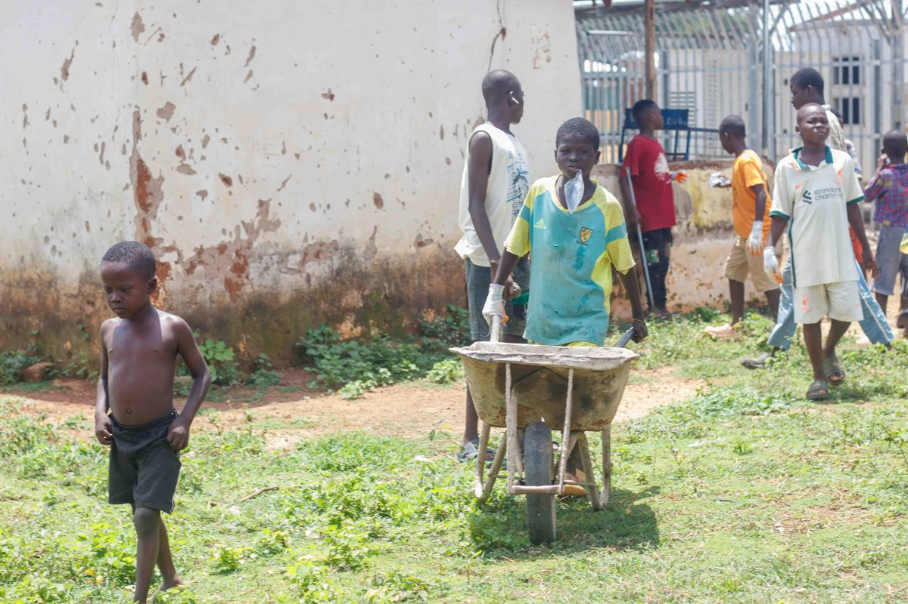

ONG Apoio Solidário
Sobre a ONG
A ONG Apoio Solidário é uma organização fictícia criada para demonstrar um projeto acadêmico de desenvolvimento Front-End. Seu objetivo é incentivar ações solidárias, campanhas de doação e participação voluntária na comunidade.
O trabalho voluntário é uma forma de colaborar com outras pessoas e ajudar a construir uma comunidade mais acolhedora.
